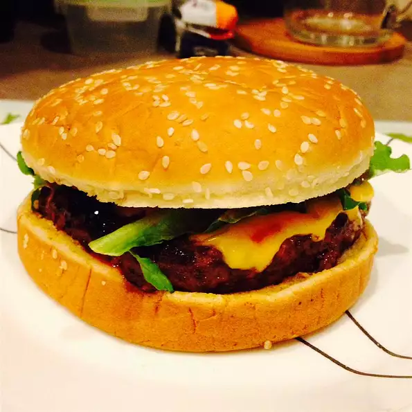

Cheese

The three best foods in the world combined in a juicy grilled cheeseburger! These go great with Cowboy Mashed Potatoes!
Ingredients:
- 1 fresh jalapeno chile pepper, finely chopped
- 2 cloves garlic, minced
- 1 small onion, finely chopped
- 1 pound lean ground beef
- 4 slices pepperjack cheese
- 4 hamburger buns
Steps:
- Preheat grill for high heat.
- Mix jalapeno pepper, garlic, onion, and ground beef in a medium bowl. Form into four patties.
- Brush grill grate with oil. Grill hamburger patties 5 minutes per side, or until well done. Top with pepperjack cheese, and serve on buns.
Return to main page